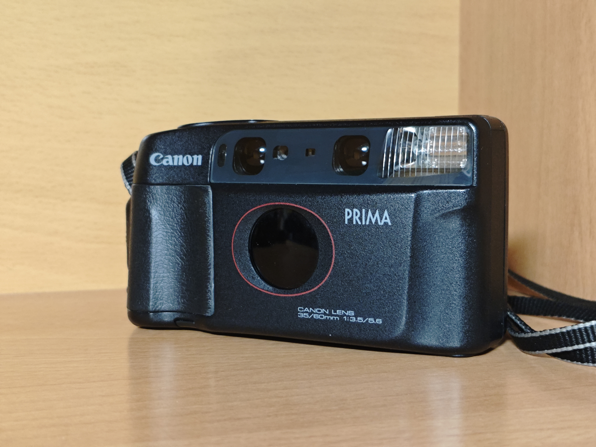

Canon Prima Tele
Precio: 12€ / día
La Canon Prima Tele (también conocida como Autoboy Tele en Japón) es una cámara analógica única de los años 80. A diferencia de los zooms convencionales, cuenta con un mecanismo que conmuta entre dos lentes fijas: un angular de 35mm y un teleobjetivo de 60mm con solo pulsar un botón.
Características principales:
- Doble focal fija incorporada: 35mm f/3.5 y 60mm f/5.6.
- Estética retro ochentera muy marcada.
- Flash integrado automático con opción de apagado.
- Carga, avance y rebobinado de película totalmente automáticos.